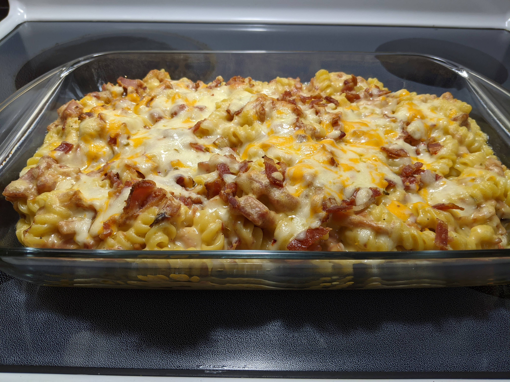

Bacon Mac and Cheese

Description
Really, any "noonles" are a hit in our home, but
add some cheesiness to the equation and it can't be
beat. Strongly influenced by Mr. Make It Happen and Tini.
One of Daddy's favourites, too.
Ingredients
- 1 lb cavatappi noodles
- 2 1/2 cups sharp cheddar
- 2 1/2 cups marble cheddar
- salt, to taste
- 1/4 teaspoon freshly cracked pepper
- 3/4 teaspoon garlic powder
- 3/4 teaspoon smoked paprika
- pinch of nutmeg
- 3 tablespoons salted butter
- 3 tablespoons AP flour
- 1 can evaporated milk
- 2 cups heavy cream
- 1 tablespoon dijon mustard
Steps
Step 1
- Preheat your oven to 350°F. Bring a large pot of
salted water to a boil over high heat. Once at a
rolling boil, add the pasta and cook it
according to the package directions. When done,
drain well.
Step 2
- While the water is coming to a boil and the
pasta cooks, shred the cheese. Grate the cheese
with the coarse side of a box grater. Once you
finish grating, mix all the cheese together in
a large bowl, then divide into two even portions
and set aside.
Step 3
- In a large pan, melt the butter over medium
heat. When melted, add 1/2 of the seasoning mix.
Stir, bringing out the aromatics. Add the flour
and cook, stirring constantly, until everything
bubbles slightly and looks incorporated.
Step 4
- Slowly stream in the evaporated milk while
whisking to ensure there are no lumps. Next,
add the heavy cream, whisking constantly.
Whisk in the Dijon and remaining seasoning mix.
Let the sauce come to a simmer and thicken,
giving it an occasional whisk.
Step 5
- Add HALF of the cheese. Turn the heat to low
(or remove it from the heat if needed) and
slowly melt in 1/2 of the cheese, handful by
handful, making sure the cheese melts before
adding more.
Step 6
- Stir in the drained pasta, making sure to coat
all the noodles in sauce. Grab your casserole
dish and add 1/2 of the mac and cheese to the
bottom of the dish, spreading evenly. Layer on
1/2 of the remaining cheese then the remaining
mac and cheese.
Step 7
- Bake in the preheated oven for 25-30
minutes or until the top melts and bubbles.
Broil for 2 minutes to give it a crispy crust,
the remove, let sit for a bit so you don’t
burn yourself, scoop and enjoy!